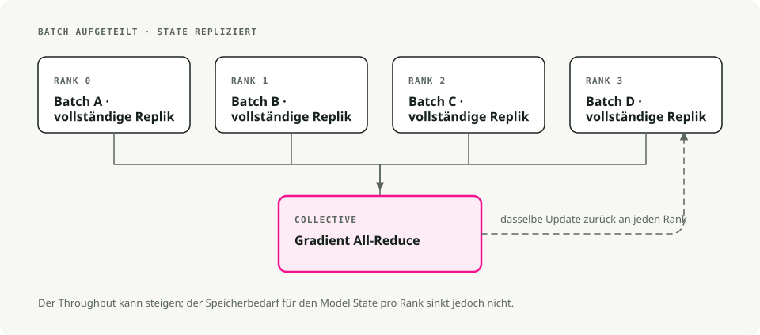
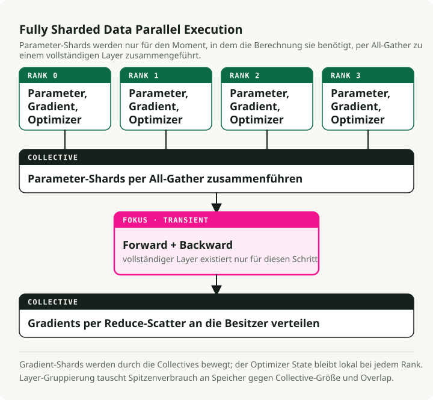
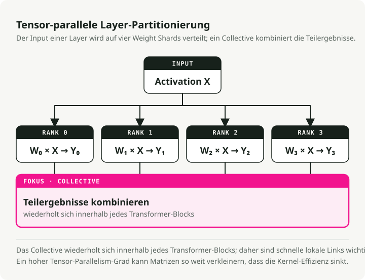
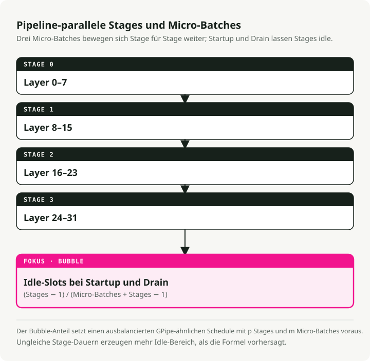
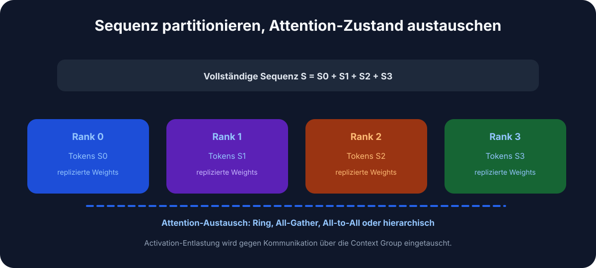
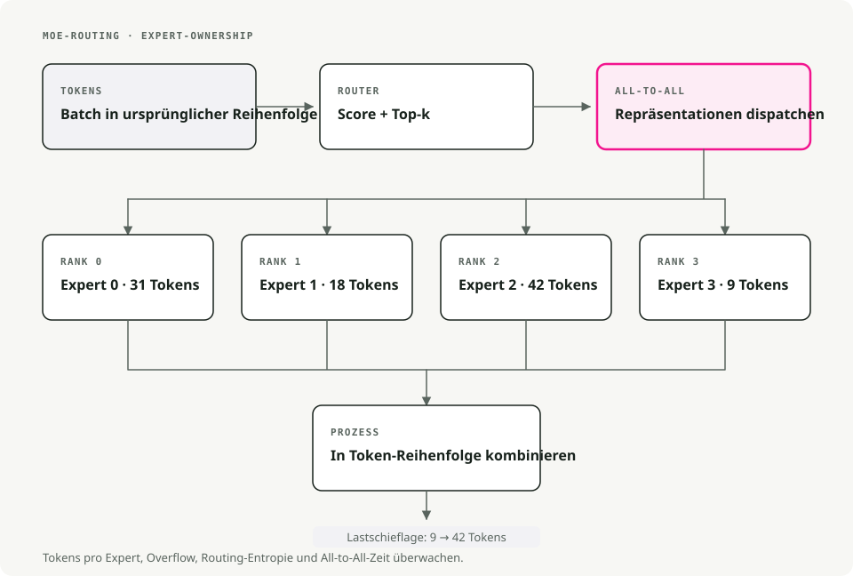
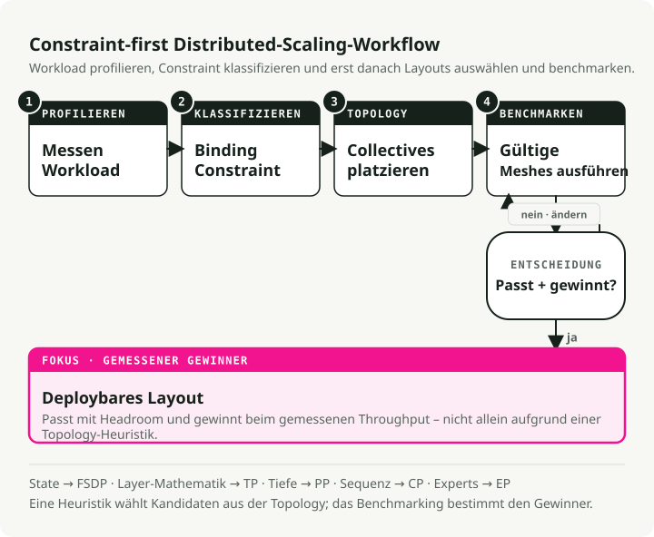

Automatische Übersetzung
Dieser Artikel wurde automatisch aus der englischen Originalversion übersetzt.
Skalierung großer Sprachmodelle: Multi-GPU- und Multi-Node-Strategien, die in der Praxis tragen
Heutige LLMs passen nicht auf eine einzelne GPU. Ein Modell mit 70B Parametern benötigt allein für die Gewichte in FP16 etwa 140GB, also fast doppelt so viel, wie eine A100 bietet. Diese Modelle zu trainieren oder bereitzustellen bedeutet, die Arbeit auf mehrere GPUs aufzuteilen — und eine schlechte Aufteilung verschwendet den Großteil Ihres Compute-Budgets.
Das ist ein praxisnaher Durchgang durch die Parallelisierungsstrategien, die in Produktion tatsächlich funktionieren, basierend auf dem Ultra-Scale Playbook von Hugging Face.
Voraussetzungen
Sie haben am meisten davon, wenn Sie bereits vertraut sind mit:
- Backpropagation, Gradienten und Optimierern wie AdamW.
- Transformer-Mechanik: Attention und Feed-Forward-Netzwerke.
- PyTorch-Grundlagen:
nn.Module,DataLoader, die Standard-Trainingsschleife.
Warum Skalierung wichtig ist
Vier Dinge zwingen Sie weg von einer einzelnen GPU. Ein 70B-Modell braucht in FP16 grob 140GB, also fast das Doppelte der 80GB einer A100. Selbst auf acht A100s dauert ein From-Scratch-Lauf für ein 13B-Modell Wochen. Lange Kontexte (32K Token und mehr) sprengen den Speicher einer einzelnen GPU, bevor überhaupt echte Arbeit erledigt ist. Und unter Produktionslast ist verteilte Inferenz das, was verhindert, dass die Tail Latency außer Kontrolle gerät.
1. Parallelisierungstechniken, einfach erklärt
1.1 Datenparallelität (DP)
Die einfachste Aufteilung. Jede GPU hält das vollständige Modell und verarbeitet einen anderen Teil des Batches. Nach der Backpropagation führen die GPUs ein All-Reduce über ihre Gradienten aus (Mittelung), dann aktualisiert jede ihre eigene Kopie. Identische Modelle, unterschiedliche Daten, synchronisierte Gewichte.
Greifen Sie dazu, wenn das Modell bequem auf eine einzelne GPU passt und Sie einfach mehr Batches pro Sekunde verarbeiten wollen. Der Setup-Aufwand ist nahezu null; DDP in PyTorch ist ein Ein-Zeilen-Wrapper. Der Haken ist der Speicher: Jede GPU hält weiterhin das vollständige Modell, Optimizer-States und Gradienten, Sie kaufen also Durchsatz, nicht Kapazität.

Tools: PyTorch DDP, Horovod.
1.2 Fully sharded data parallelism (FSDP)
DP, aber speicherbewusst. Parameter, Gradienten und Optimizer-States werden über GPUs hinweg geshardet. Während des Forward-Pass sammelt jede GPU die benötigten Parameter von den anderen ein, rechnet, und verwirft dann die geliehenen Shards wieder, um Speicher freizugeben. Im Backward-Pass wird erneut gesammelt, dann werden Gradienten reduziert, sodass jede GPU nur ihren eigenen Shard aktualisiert.
Das ist die Ebene, zu der Sie greifen sollten, sobald das Modell aus einer einzelnen GPU herausgewachsen ist (typischerweise alles über ~10B Parametern) und Sie auf einer einzelnen Maschine weitertrainieren wollen, ohne Ihren Code umzuschreiben. In der Praxis erlaubt FSDP das Training von Modellen, die 4–8× größer sind als das, was auf eine einzelne GPU passt.

[!NOTE] ZeRO-Stufen, kurz erklärt FSDP wird häufig in ZeRO-Begriffen beschrieben (Zero Redundancy Optimizer):
- Stage 1: shardet nur Optimizer-States (~4× Speicherersparnis).
- Stage 2: shardet Gradienten + Optimizer-States (~8× Speicherersparnis).
- Stage 3: shardet Parameter + Gradienten + Optimizer-States (lineare Skalierung mit N GPUs).
PyTorch FSDP verhält sich standardmäßig wie Stage 3.
FSDP in PyTorch aktivieren
from torch.distributed.fsdp import FullyShardedDataParallel as FSDP
# 1. Wrap your model
model = MyLLM()
model = FSDP(model)
# 2. Train as usual
output = model(input)
loss = output.sum()
loss.backward()
optimizer.step()
Tools: PyTorch FSDP, DeepSpeed ZeRO-3.
1.3 Tensor-Parallelität (TP)
Teilt einzelne Layer über GPUs auf. Nehmen Sie eine Gewichtsmatrix, zerlegen Sie sie spaltenweise (oder zeilenweise) in Stücke und geben Sie jeder GPU ein Stück. Jedes Gerät berechnet seinen Teil des Outputs; ein All-Reduce oder eine Konkatenation setzt die Ergebnisse vor dem nächsten Layer wieder zusammen. Das passiert in jedem Layer.
TP lohnt sich, wenn einzelne Layer selbst nach FSDP noch zu groß sind — riesige Attention-Matrizen oder breite FFNs. Es setzt außerdem eine schnelle Intra-Node-Verbindung voraus: NVLink oder NVSwitch, nicht PCIe. Über Nodes hinweg wird das All-Reduce pro Layer zum Flaschenhals und der Vorteil verschwindet. Ein TP-Grad von 2–8 innerhalb einer einzelnen Maschine ist typischerweise der Sweet Spot.

Tools: Megatron-LM, TensorRT-LLM, ColossalAI.
1.4 Pipeline-Parallelität (PP)
Teilt das Modell vertikal, nach Layer-Gruppen. Layer 1–10 liegen auf GPU 1, Layer 11–20 auf GPU 2 und so weiter. Dann werden Micro-Batches durch die Pipeline geschickt, sodass jede Stufe beschäftigt bleibt: GPU 1 beendet Batch 1 und übergibt ihn an GPU 2, dann startet sie sofort mit Batch 2. Mit genug Micro-Batches in der Pipeline arbeitet jedes Gerät an irgendetwas.
Greifen Sie zu PP, wenn das Modell so tief ist, dass selbst FSDP es nicht unterbringt, oder wenn Sie über mehrere Nodes gehen müssen und die Inter-Node-Bandbreite der limitierende Faktor ist. Der lästige Teil sind Pipeline-„Bubbles“ — inaktive Stufen am Anfang und Ende jedes Batches — die Sie minimieren, indem Sie viele kleine Micro-Batches statt weniger großer ausführen.

Tools: DeepSpeed PP, Megatron-LM, GPipe.
1.5 Kontext-Parallelität (CP)
Für sehr lange Sequenzen. Teilen Sie einen Kontext mit 64K Token auf zum Beispiel vier GPUs auf (jeweils 16K Token). Jede GPU führt Self-Attention auf ihrem lokalen Chunk aus, dann tauschen die GPUs Keys und Values aus, um die Cross-Chunk-Attention-Anteile zu berechnen. Das zusammengeführte Ergebnis entspricht dem, was Sie erhalten würden, wenn Sie den vollständigen Kontext auf einem einzelnen Gerät ausführen würden — nur ohne die entsprechende Speicherrechnung.
Das ist der Hebel, den Sie ziehen, wenn die Kontextlänge und nicht die Modellgröße der Flaschenhals ist: Analyse langer Dokumente, buchlanges Reasoning, Codegenerierung über ein großes Repo. CP macht Training mit 100K+ Token auf Hardware möglich, die sonst bei 8K Schluss machen würde.

1.6 Experten-Parallelität (Mixture of Experts)
Spezialisierung. Ersetzen Sie dichte FFN-Layer durch N Experten-Subnetze (8, 64, manchmal mehr). Ein kleines Gating-Netzwerk wählt für jedes Token die Top-k-Experten aus (meist top-2). Nur diese Experten werden für dieses Token ausgeführt; der Rest bleibt inaktiv. Unterschiedliche Experten können auf unterschiedlichen GPUs liegen, sodass das Modell insgesamt riesig sein kann, während der Compute pro Token klein bleibt.
Mixtral-8x7B hat 56B Gesamtparameter, aber nur ~13B aktive pro Token; Grok und DeepSeek-V2 nutzen denselben Trick. Der Preis ist Komplexität beim Training: Load Balancing zwischen Experten ist ein eigenes Engineering-Problem, und Routing-Instabilität hat mehr als einen MoE-Lauf zum Divergieren gebracht.

Schneller Vergleich: Welche Parallelisierung sollten Sie verwenden?
| Technique | What it splits | Best for | Memory savings | Communication cost |
|---|---|---|---|---|
| Data Parallelism (DP) | Data batches | Models that fit on 1 GPU | None (copies model) | Low (only gradients) |
| FSDP | Model + optimizer + gradients | Models too big for 1 GPU | High (4–8×) | Medium |
| Tensor Parallelism (TP) | Individual layers | Huge layers, fast GPUs | Medium | High (per layer) |
| Pipeline Parallelism (PP) | Layer groups (stages) | Very deep models | Medium | Low (between stages) |
| Context Parallelism (CP) | Sequence length | Long contexts (64K+ tokens) | High (for activations) | Medium |
| Expert Parallelism (MoE) | Experts in MoE layers | Massive sparse models | None (more params, less FLOPs) | Medium |
Ein sinnvoller Default: Starten Sie mit FSDP. Fügen Sie TP hinzu, wenn einzelne Layer immer noch zu groß sind. Fügen Sie PP hinzu, wenn Sie über mehrere Nodes skalieren müssen. Fügen Sie CP hinzu, wenn die Kontextlänge der Flaschenhals ist.
2. Praktische Trainingsstrategien
Unterschiedliche Hardware-Setups erfordern unterschiedliche Kombinationen. Hier ist, was ich in drei häufigen Szenarien tatsächlich tun würde.
2.1 Einzelne Maschine, 2–8 GPUs
Verwenden Sie zuerst reines FSDP — PyTorch FSDP oder DeepSpeed ZeRO-2/ZeRO-3 — gesteuert durch Hugging Face accelerate oder torchrun. Wenn einzelne Attention- oder FFN-Layer nach dem Sharding immer noch zu groß sind, ergänzen Sie TP=2.
Ein paar hardwarespezifische Hinweise. Consumer-GPUs (RTX 4090 und ähnliche) auf PCIe sollten bei TP=1 oder maximal TP=2 bleiben; die Interconnects schaffen mehr nicht. Server-GPUs (A100, H100) mit NVLink kommen mit TP=2 bis TP=4 gut zurecht. Und auf acht GPUs in einer einzelnen Box kommt reines FSDP oft mit Modellen bis 70B aus, ganz ohne TP.
2.2 Kleiner Cluster, 2–16 Nodes (≤128 GPUs)
Sie wollen 2D- oder 3D-Parallelität: TP plus FSDP, optional plus PP. Die Form, die in der Praxis funktioniert:
- TP innerhalb jedes Nodes (TP=4 oder TP=8 mit NVLink).
- FSDP über Nodes hinweg für Datenparallelität.
- Fügen Sie PP hinzu, wenn das Modell so tief ist, dass selbst FSDP es nicht unterbringt, und teilen Sie es vertikal über Nodes auf.
Warum dieses Layout funktioniert: NVLink ist schnell genug für das Rauschen von TP auf Layer-Ebene, während InfiniBand zwischen Nodes nur FSDP-Shards synchronisieren muss, was deutlich günstigere Kommunikation ist. Nettoeffekt: Sie minimieren Cross-Node-Bandbreite, und genau die ist in diesem Maßstab fast immer der Flaschenhals.
Wenn Sie PP hinzufügen, setzen Sie die Anzahl der Micro-Batches auf mindestens 4× des Pipeline-Grads. Darunter fressen die Bubbles Ihren Durchsatz auf.
2.3 Großer Cluster (Hunderte bis Tausende GPUs)
Hier beginnt 4D-Parallelität (DP × TP × PP × CP) Sinn zu ergeben. Ordnen Sie jede Dimension Ihrer Hardware-Topologie zu und verwenden Sie Megatron-LM oder Nanotron — sie unterstützen 4D out of the box, und eine Eigenentwicklung ist ein eigenes Projekt.
Realistisch brauchen Sie das nur, wenn Sie 70B+-Modelle mit 32K+-Kontextfenstern from scratch vortrainieren. Die meisten Fine-Tuning-Workloads, selbst für große Modelle, tun das nicht.
Ein konkretes Beispiel. Training eines 70B-Modells mit 32K Kontext auf 512 GPUs:
- TP=8 innerhalb jedes 8-GPU-Nodes.
- PP=4 über vier Nodes hinweg.
- CP=4 für den langen Kontext.
- DP=4 für Durchsatz.
- 8 × 4 × 4 × 4 = 512 GPUs.
Die Skalierungseffizienz bei einem Setup wie diesem liegt mit gutem InfiniBand bei etwa 70–80%, und mit sorgfältigem Tuning kommen Sie auf ~85%. Alles darunter bedeutet, dass Sie echtes Geld auf dem Tisch liegen lassen.
3. Tools, die es zu lernen lohnt
Ein kurzes Cheat Sheet, um das richtige auszuwählen:
| Tool | When to use | Learning curve | Best for |
|---|---|---|---|
| Hugging Face Accelerate | Any distributed training with minimal code changes | ★☆☆☆☆ | Beginners, quick prototypes |
| PyTorch FSDP | Medium-to-large models (1–30B) on a single node | ★★☆☆☆ | The common case |
| DeepSpeed ZeRO | Multi-node training with good documentation | ★★★☆☆ | Production training |
| Megatron-LM | Very large models (70B+), 3D/4D parallelism | ★★★★☆ | Production at scale |
| Nanotron | Learning and research on modern parallelism | ★★★☆☆ | Education, experimentation |
| vLLM | Fast inference with PagedAttention and KV caching | ★★☆☆☆ | Serving in production |
| TensorRT-LLM | Maximum inference speed on NVIDIA GPUs | ★★★★☆ | Production inference optimization |
Eine minimale accelerate FSDP-Konfiguration
compute_environment: LOCAL_MACHINE
distributed_type: FSDP
fsdp_config:
fsdp_auto_wrap_policy: TRANSFORMER_BASED_WRAP
fsdp_backward_prefetch: BACKWARD_PRE
fsdp_state_dict_type: SHARDED_STATE_DICT
machine_rank: 0
main_process_ip: null
main_process_port: null
main_training_function: main
mixed_precision: bf16
num_machines: 1
num_processes: 8
use_cpu: false
Wenn Sie gerade anfangen, würde ich zu Hugging Face Accelerate greifen, um erst einmal etwas zum Laufen zu bringen, und dann zu PyTorch FSDP oder DeepSpeed wechseln, sobald Sie feinere Kontrolle benötigen.
4. Ein Entscheidungsrahmen

Die Grafik oben entspricht dem, was ich in der Praxis tun würde: zuerst FSDP, TP wenn Layer zu groß sind, PP für Multi-Node-Tiefe, CP für langen Kontext. Fügen Sie Komplexität erst hinzu, nachdem der einfachere Ansatz tatsächlich an seine Grenzen gestoßen ist.
5. Das Ultra-Scale-Cheat-Sheet
Das Team von Hugging Face hat eine einseitige visuelle Zusammenfassung erstellt, die den Großteil des Obigen abdeckt:

Fazit
FSDP deckt den Großteil dessen ab, worauf Sie stoßen werden. TP passt innerhalb eines Nodes, wenn einzelne Layer immer noch nicht passen. PP verteilt das Modell über Nodes, wenn Tiefe die Einschränkung ist. CP kommt ins Spiel, wenn die Kontextlänge Ihnen den Speicher ausgehen lässt. Das Prinzip, das für alle gilt: Stimmen Sie die Parallelisierungsstrategie auf die Hardware-Topologie ab, die Sie tatsächlich haben, und fügen Sie eine neue Dimension erst dann hinzu, wenn die einfachere ausgeschöpft ist.
Weiterführende Literatur:
- Hugging Face Ultra-Scale Playbook — der interaktive Leitfaden, auf dem dieser Beitrag basiert.
- PyTorch FSDP Tutorial — der offizielle Einstieg.
- DeepSpeed Tutorials — die vollständige DeepSpeed-Dokumentation.